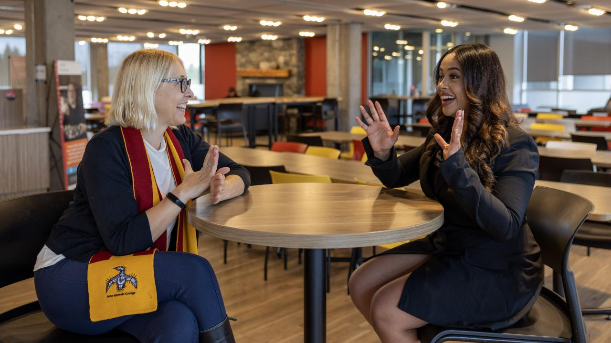
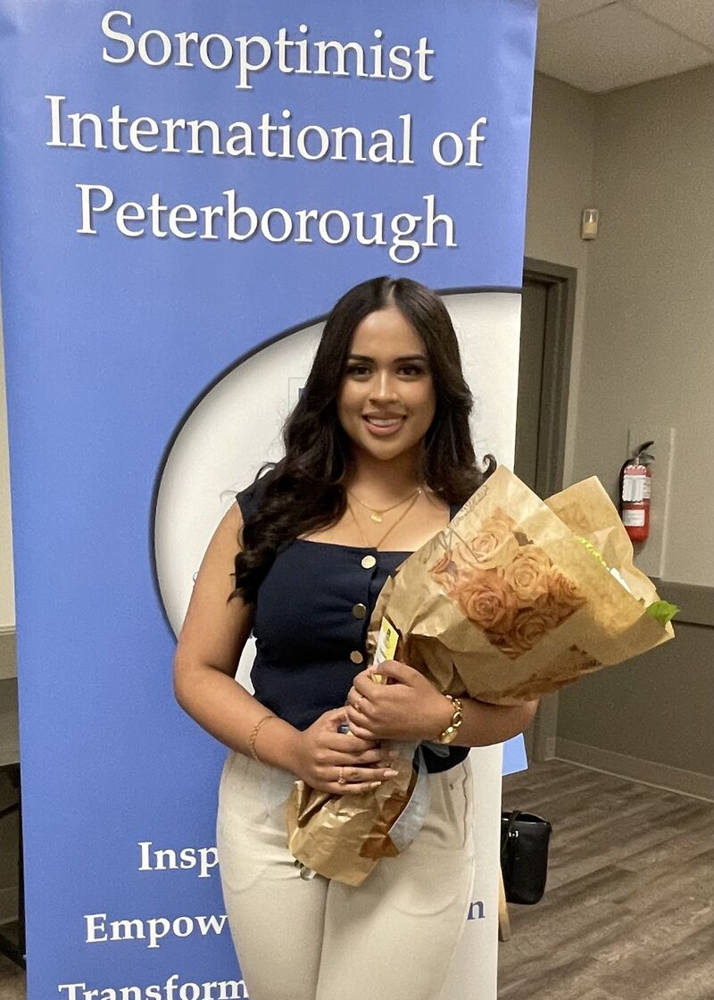
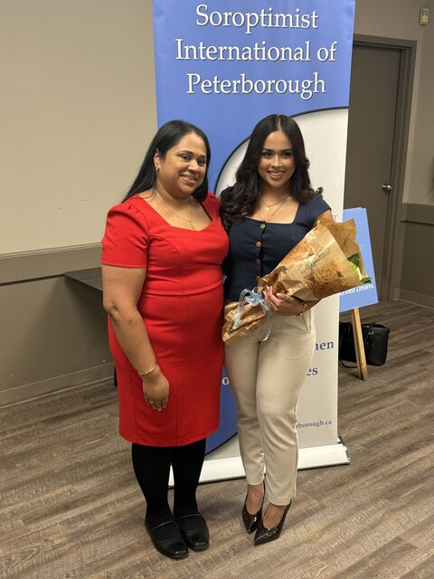
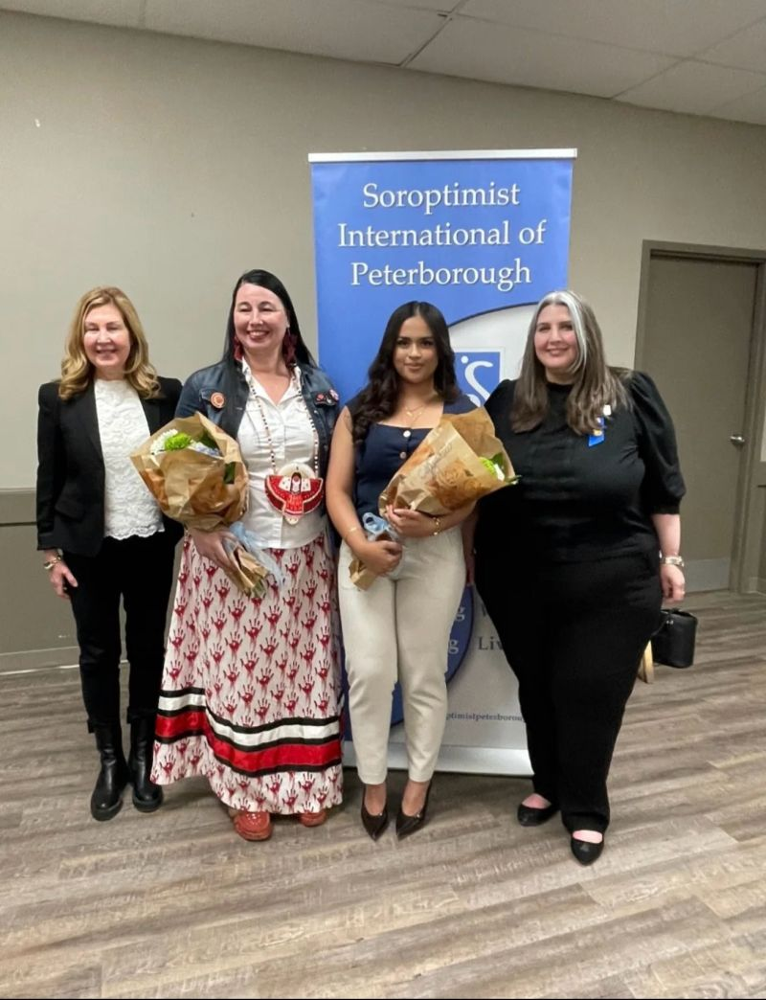
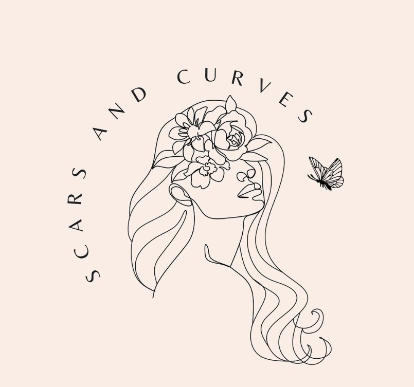

Forensic Science & Business · Joint Major · Trent University · 3rd Year
Founder · Scars & Curves · Women's Empowerment
Aspiring Lawyer · Advocate for Women & Justice
I'm Drishya Destiny — a third-year Bachelor of Arts and Science Honours student at Trent University, joint majoring in Forensic Science and Business, on my way to law school and driven by a single belief: that justice and opportunity should belong to everyone, especially women who've had to fight harder for both.
Not long after I arrived at Trent, my professors nominated me for the Fessenden-Trott Scholarship — a national leadership award — and I won it. Having my work and my potential recognized that early changed what I believed I was capable of building. Two Dean's Honour Rolls and a Soroptimist scholarship have followed since.
I founded Scars & Curves because I saw women around me who needed more than sympathy — they needed community, visibility, and a platform that took them seriously. Building that from scratch, while carrying a full course load, taught me more about leadership than any class could.
Law is the next chapter. I want to work at the intersection of women's rights, advocacy, and systemic change — in spaces where the rules are written and where the people who make them have forgotten who they're supposed to serve.
Scholarships, honours, and certifications earned at Trent University and Lorne Park Secondary School.




The name has a deep meaning behind it. Many of us carry scars from the past, and many of us took curved — difficult — pathways to get where we are today. Some of us are still walking them.
I founded Scars & Curves in 2021, while still in high school, because the women around me needed a real community — not a support group, but a movement. A space to be seen, to grow, and to build something together. In 2025 I brought it to Trent as a full campus club.
What started as a campus club is being built into something much larger: a scholarship-granting organization with a formal board, national reach, and real investment in women's futures.

Five years of showing up — for students, for seniors, for children, and for women who needed someone in the room.
Writing is how I think. Below is a space for articles, essays, and perspectives — on law, women, identity, and what it means to build something from scratch.
Each of these is tied to where it was actually built — not a self-assigned rating.
Whether you're a mentor, a law school representative, a potential employer, or someone who just wants to connect — I'd love to hear from you.